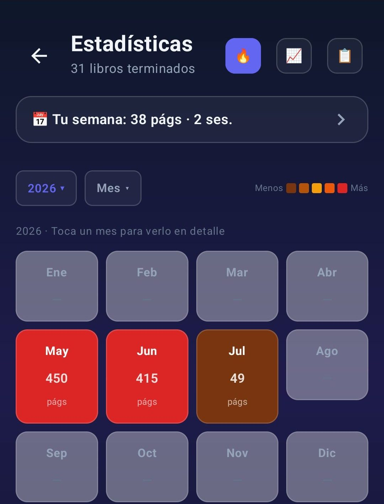

Función
Estadísticas de lectura para Android
Páginas por minuto, heatmap de lectura, comparativa mensual, resumen anual. Datos que se leen bien.
Qué se registra
Cada sesión guarda páginas, minutos y libro. Con eso Lecturameter deriva:
- Ritmo de lectura en páginas por minuto, por sesión, por libro y global
- Tiempo de lectura por día, semana, mes y año
- Páginas por día, semana, mes y año
- Días distintos leídos, racha actual, racha más larga
- Libros empezados y terminados, por mes y por año
- Géneros, formatos y valoraciones
- Predicción de cuánto tardarás en un libro a tu ritmo actual
Heatmap
Un heatmap tipo calendario muestra los días que has leído y cuánto. Tocas un día y ves las sesiones de ese día. Tocas una sesión y saltas al libro. Es un atajo de vuelta a tu propio historial.

Estadísticas mensuales
Cada mes tienes una página con tu ritmo, tus páginas, tus días leídos, tus libros destacados y una comparativa con el mes anterior. Es lo más parecido a un resumen mensual sin esperar a diciembre.

Resumen anual
Wrapped es el resumen anual que se desbloquea el 26 de diciembre. Agrupa tu año de lectura en cards, se acuerda de las canciones del momento si quieres y se puede exportar como imagen para compartir. Un resumen honesto y tranquilo, una vez al año.
Lo que Lecturameter no hace
Sin predicciones de IA. Sin recomendaciones de libros. Sin rankings. Las estadísticas miden lo que has hecho. No lo juzgan.
Preguntas frecuentes
Pruébalo en Android
Ver también: Cronómetro · Tracker de lectura · Alternativa a Goodreads · Blog